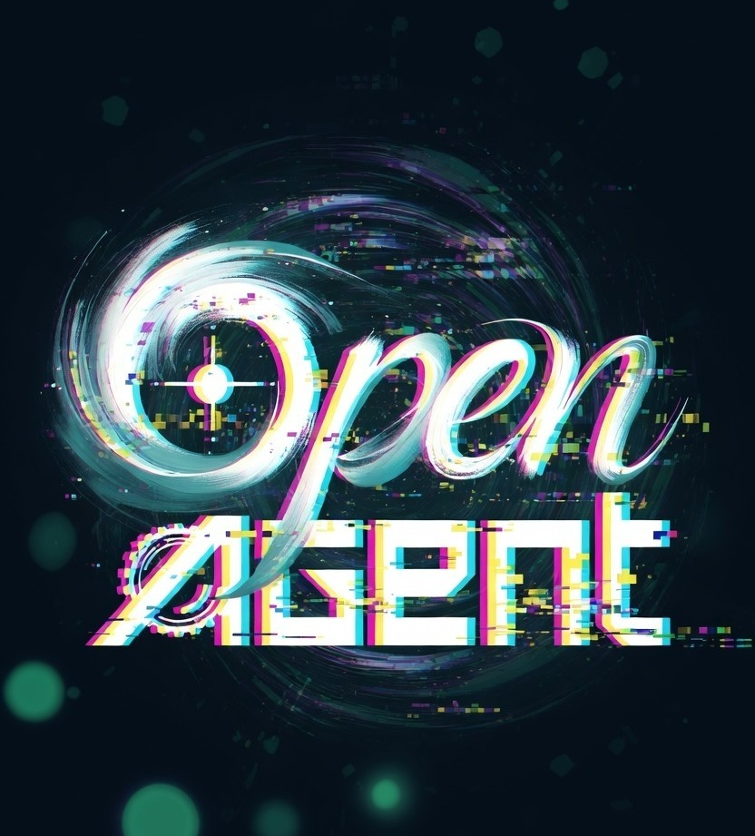
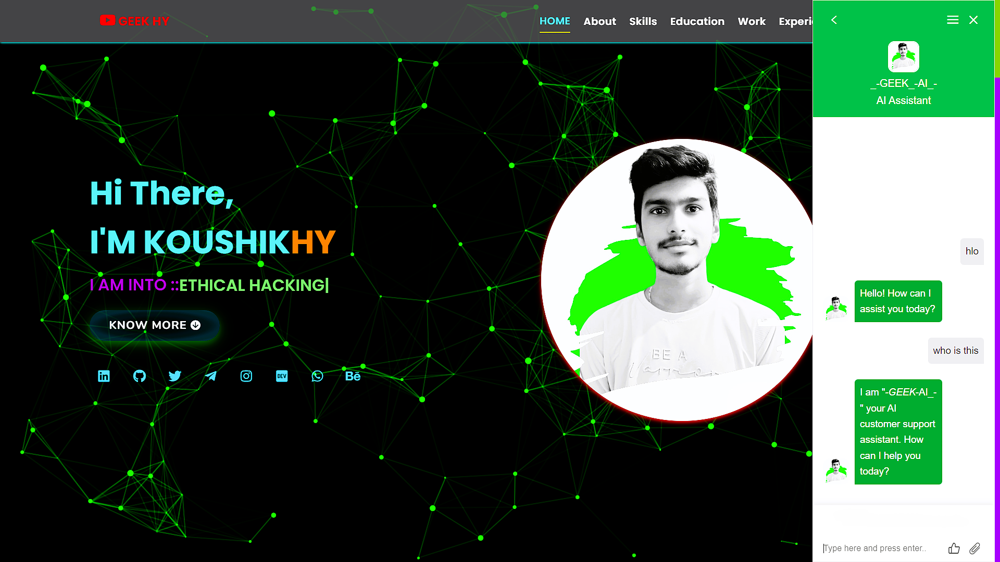
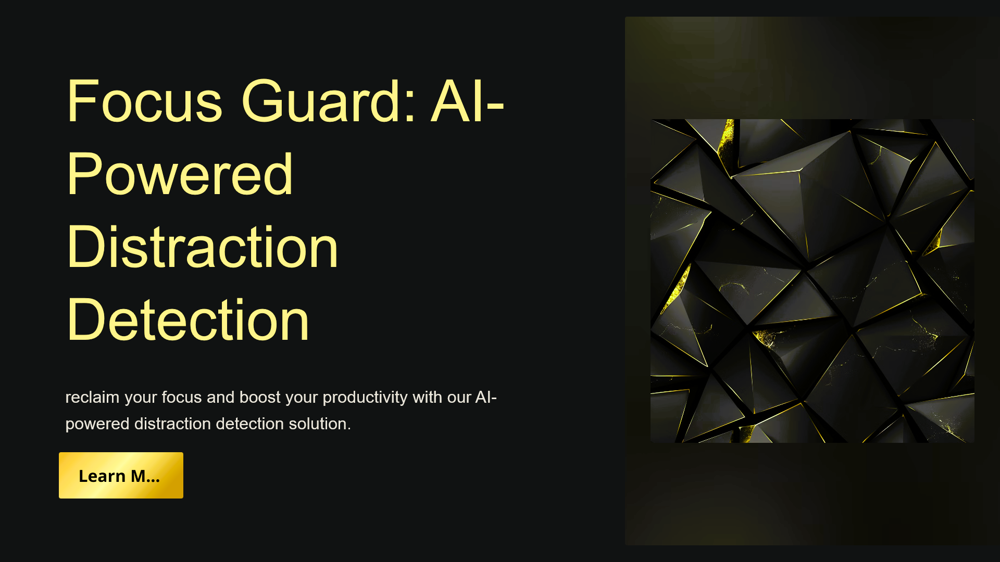
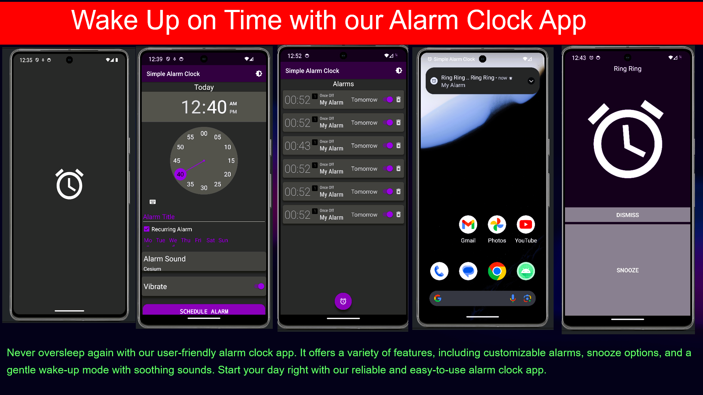
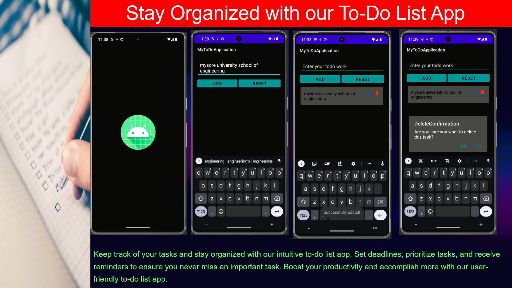
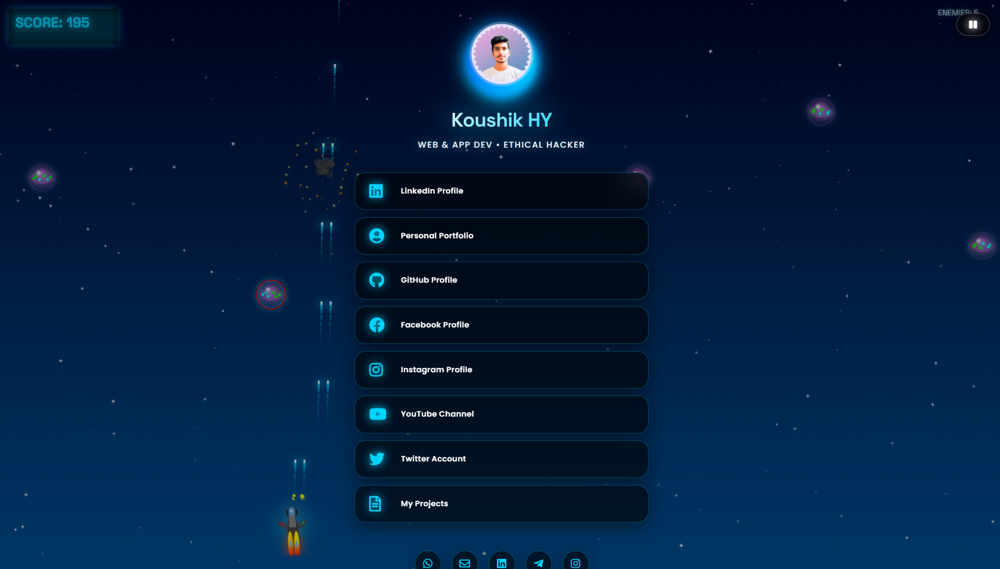
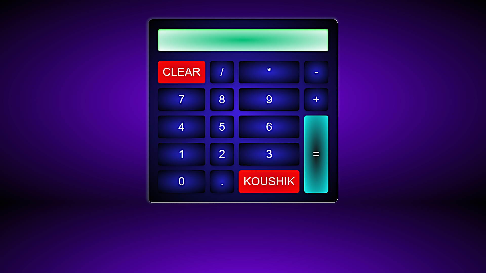

A next-gen AI assistant combining cloud intelligence (Groq Llama 3.3 70B) with local privacy (Ollama Phi-3). Features web search, file parsing, OCR vision, RAG memory, and a cyberpunk UI.
Discover the vibrant tapestry of India through an immersive travel experience website featuring rich regional culture and trip planning.
A cipher code generator and decrypter using blowfish algorithm compatible with any versions of Android and iOS operating system.

Next-level responsive portfolio using gyroscopic movement tracking system with React/JS, SCSS, CSS.

A sophisticated system designed to detect distraction using face algorithm with real-time AI & ML computer vision.

A vintage-themed alarm clock app built using Kotlin, Java, SDK, Gradle, XML & JDK supporting Android and iOS.

A task management application built using Kotlin, Java, SDK, Gradle, JDK, XML supporting Android and iOS productivity.

An interactive digital visiting card web application built with HTML, CSS & JavaScript for modern networking.
A smart city waste management system with AI assistant using route optimisation — developed in a 24-hour hackathon.

A sleek, cyberpunk-themed calculator built with JavaScript, CSS and SCSS for quick computational tasks.